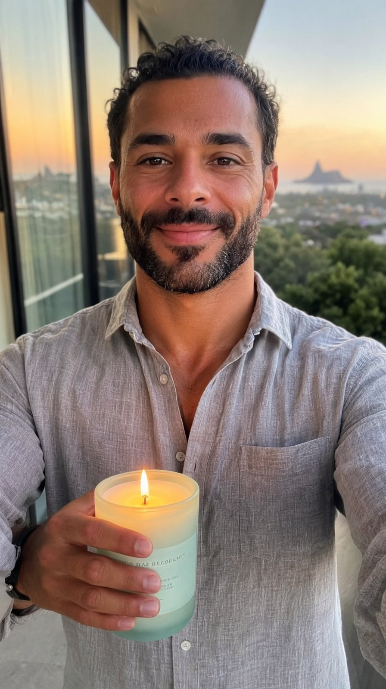
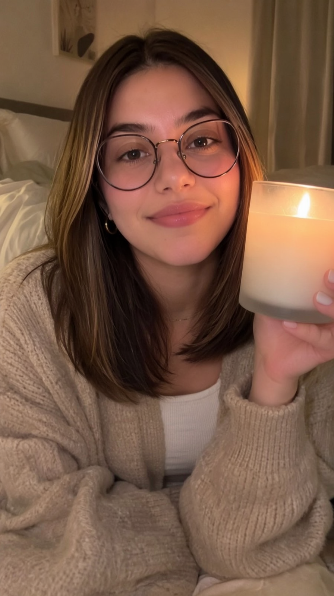
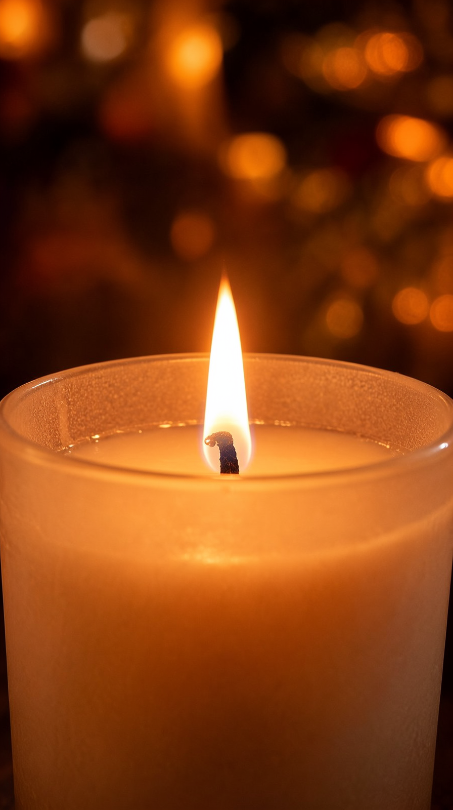
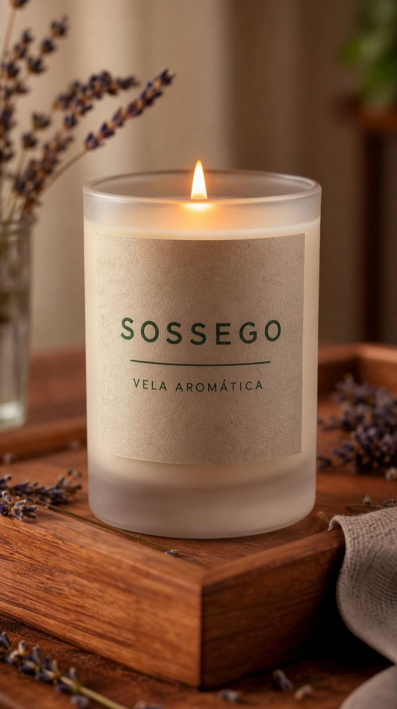
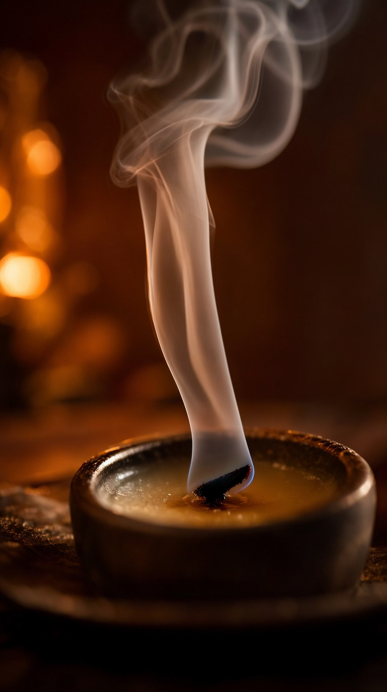

O reparo da v10 (Duda com traços de IA na atuação energética) foi atacado com o que faltava na stack: LoRAs. O fal Realism-People (H3, 0.8, empilhado no turbo) + direção calma resultaram em atuação 10/10 com zero traços de IA no Rafa. Produto: SOSSEGO, vela aromática — chama, cera e fumaça, zero líquido fino.
A pesquisa de LoRAs → o que entrou e o que ficou fora
| Modelo | LoRA candidato | Status |
|---|---|---|
| MiniMax H3 | fal/MiniMax-H3-Realism-People-LoRA (HF, 126 MB, t2v/i2v/r2v) — rostos em close, pele natural, gestos críveis | ✓ Adotado — empilhado no turbo 8-step (workflow h3_i2v_realism_api.json, strength 0.8). QA: atuação 10/10, "pés de galinha reais, poros visíveis, zero overacting" |
| Wan 2.2 5B | [Beauty of Rain](Civitai) — água; versões: H3, LTX, 14B (sem 5B) | ✗ Download exige login na Civitai (sem token na sessão) — deixado como reserva |
| Wan 2.2 5B | [Instareal] — realismo base… da variante 14B, em .zip | ✗ Não aplica ao 5B |
| MOSS-Image | Turbo 8-step / rapid-moss 4-step (Civitai) — velocidade, não qualidade | ◐ Opcional: cortaria stills de 45 s→~15 s (sem ganho de qualidade; fora do escopo) |
Os entregáveis · 1080×1920 · 10,0 s · LUFS −14





A jornada
| v10 (LUZ) | v11 (SOSSEGO) | |
|---|---|---|
| Atuação | Bia 10/10 (calma) · Duda ~8 com traços (energia exagerada) | Ambos calmos + LoRA realism → 10/10, traços 0 |
| LoRAs | nenhum | fal Realism-People no pipeline (reserva: LoRAs de água quando houver token Civitai) |
| Produto | sérum (viscoso) | vela (chama/cera/fumaça — o terceiro regime "seguro" da IA) |